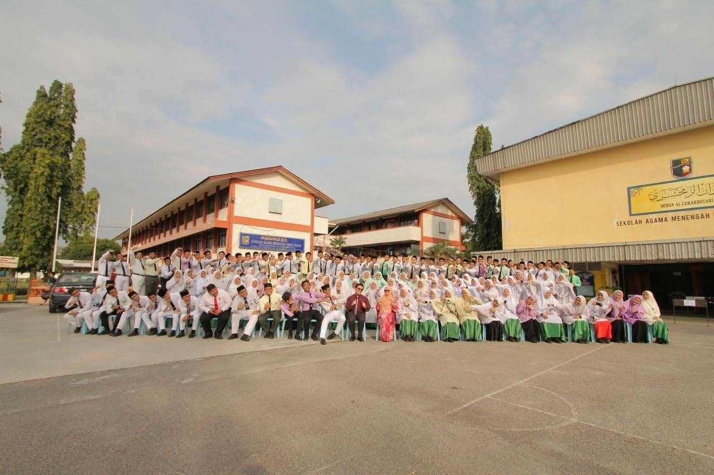

I started my school in 2009, all the way from standard 1 to the standard 6 in 2014 and finished my UPSR exam here with excellent result. I was very grateful to meet a lot friends and some of them even still in contact with until this day.
This place is where I grew and developed as a person, I learnt a lot of lessons from incredible people. This is also where I gain a ton of experience and knowledge from amazing and friendly team of teachers. This place is also where I became a prefects and learn the inside outs of being a leader and a good example to my fellow peers. Not to mention, I create a lot of sweet memories along with my friends. I finised studying here in 2019.

This is where I continue my study under Information Management Faculty for five semesters in total and hopefully will graduate this year. I am very grateful to have such an amazing support system and great circle and group of friends to help me in navigating the new chapter of our life. Admittedly, the university phase is a bit awkward to say the least. This is because of Covid 19 that happened in mid 2020 making our class have to held online. This really impacted our social life and making most of us struggle to adapt to this new norm.